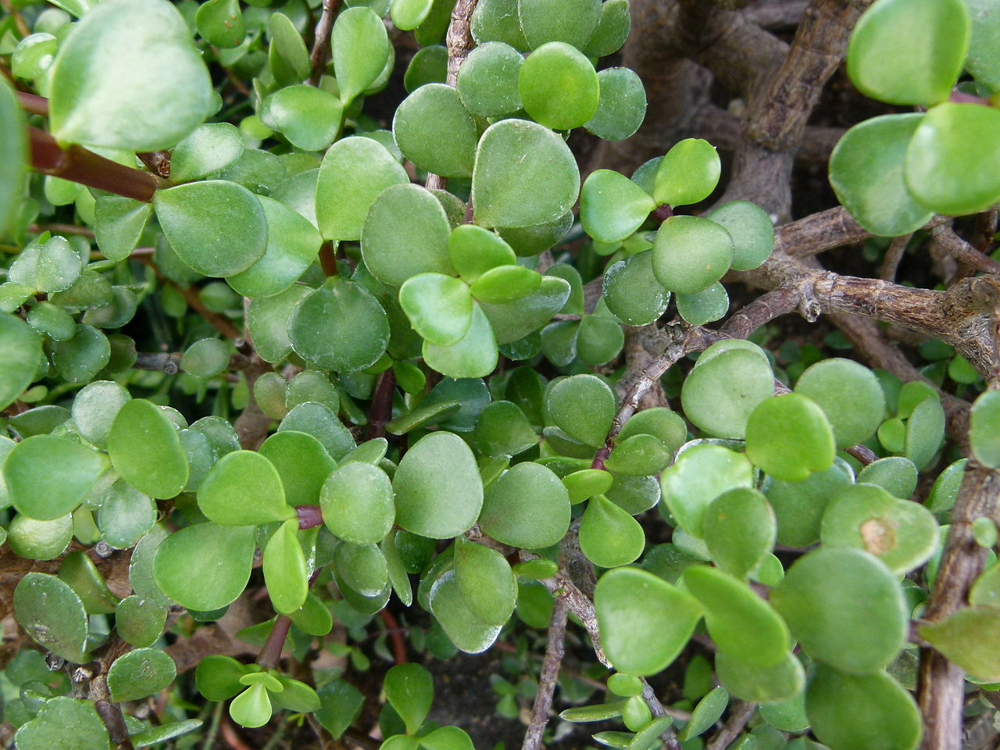
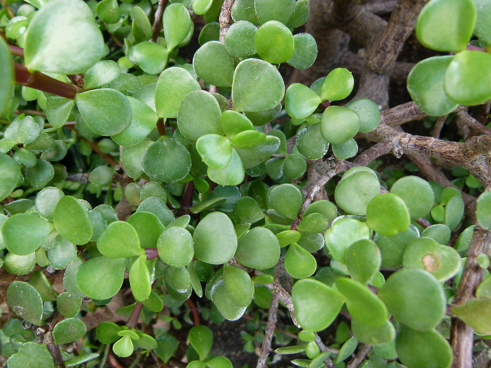

Portulacaria afra
(Elephant Bush)
 

Portulacaria afra (known as elephant bush, porkbush, purslane tree, dwarf jade and spekboom in Afrikaans) is a small-leaved succulent plant found in South Africa. These succulents commonly have a reddish stem and leaves that are green, but also a variegated cultivar is often seen in cultivation. They are simple to care for and make easy houseplants for a sunny location. In frost-free regions they may be used in outdoor landscaping.